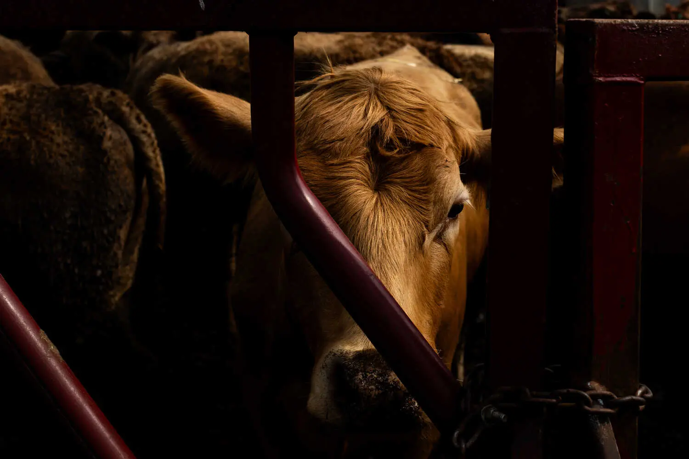

LIVE just now
Six Bodies Recovered in Gaza Were Hostages, Israel and U.S.
Say One of the dead, Hersh Goldberg-Polin, was an Israeli American dual citizen.
In Race Against Polio, Gaza Begins Vaccination Drive
Israel and Hamas agreed to pause the war to permit the vaccination of 640,000 children in Gaza. It will be a daunting effort for health workers.

Something’s Poisoning America’s Land. Farmers Fear ‘Forever’ Chemicals.
Fertilizer made from sewage has been spread on millions of acres of farmland for decades. Scientists say it can contain high levels of the toxic substance.
The Times investigated the widespread use of sewage sludge as fertilizer. Here are five takeaways.
Conservative Moms, Charmed by Trump, Would Rather Avoid His Misogyny
At a convention, some of the Moms for Liberty acknowledged they would prefer less crude talk from former President Trump.
Kamala Harris Says Arlington Is ‘Not a Place for Politics’
Donald Trump’s campaign filmed him at Arlington National Cemetery, which led to a confrontation between one of his aides and a cemetery official.
Donald Trump is willing to make as many abortion policy shifts as he deems necessary to win in November, vexing some conservatives.
What to Watch for in East German State Elections on Sunday
The prospect of a strong performance by the far-right Alternative for Germany party in two state elections is one of the problems for Chancellor Olaf Scholz.